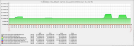
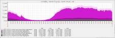
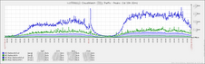
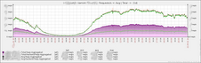
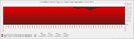
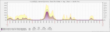
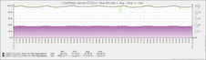
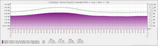

lorieri/zabbix by lorieri
PoC for effective cloud capacity management and Amazon AWS monitoring using Zabbix and Chef automation
About
This is an usable proof of concept on how to manage an efficient capacity planning (do more with less) and monitoring for cloud computing over Amazon's AWS installations and using Zabbix SIA's monitoring tool and Opscode's Chef automation tool.100% tested (by me only)
100% documented, but you need to know AWS, Zabbix and Chef
100% templated
100% automated (as possible)
Graphics examples
{kind=link}
{kind=link}
{kind=link}
{kind=link}
{kind=link}
{kind=link}
{kind=link}
{kind=link}
Goals
It has 6 main goals:Those concepts are not new nor invented by me, but here you can find an easy way to implement them either for AWS or any other environment.
Templatization
Shows how can the entire Zabbix configuration be templated, exploring this awesome Zabbix's feature.
Aggregation
By aggregating groups it is easy to manage and persist values of volatile AWS instances creation and destruction, and still be able to plan for best resources usage. It is similiar as how Cloudwatch do, but lasts longer than few weeks.
Resources optimization
By using trapper items ("listeners"), show how to send all the values at same time from the zabbix_sender tool. It helps to get snapshots of a moment and make calculations more accurate. It also avoids long configurations in the agent side.
By trying to use only the built-in agent items to build the LinuxBasic template.
Abstraction
By modificating the default Linux template adding some more abstraction making it easier to use the same template for all machines you have. It also includes the cpu steal time that is important for vms and EC2 Amazon instances.
Auto-register, auto-deregister
Not only building a script for auto-registration, but showing how to make it efficient exploring the goals above. The script is also based in the Zabbix's API. Deregistration is based on Amazon AWS, specially the autoscaling service were your machines' pool increases and decreases dinamically.
Plan
- Done: convert original scripts to github while creating documentation- Done: instructions for non-chef users
- Done: instructions for multiple AWS accounts
- Done: test a complete deploy
- Done: update the documentation after the deploy
Components
TODO/Limitations/Known issues:
- use more python, specially for de-registration- fix the max of 5 AWS accounts silly limitation
- make a centralized documentation
- build a step-by-step walkthrough
- improve the calculate itens for low traffic machines don't divide by zero and disable
the item/trigger for a while
Dependencies
zabbix, of course
if you are going to put it on chef: http://community.opscode.com/cookbooks/zabbix
Install
check the readme files at the repository tree
License
bsd until I come out with something else
Contact
lorieri (lorieri@ google mail dot com)
Related projects
http://code.google.com/p/mikoomi/
Download
You can download this project in either zip or tar formats.
You can also clone the project with Git by running:
$ git clone git://github.com/lorieri/zabbix